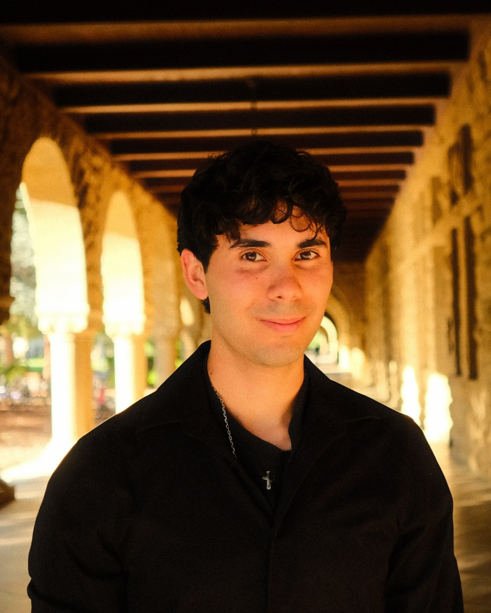
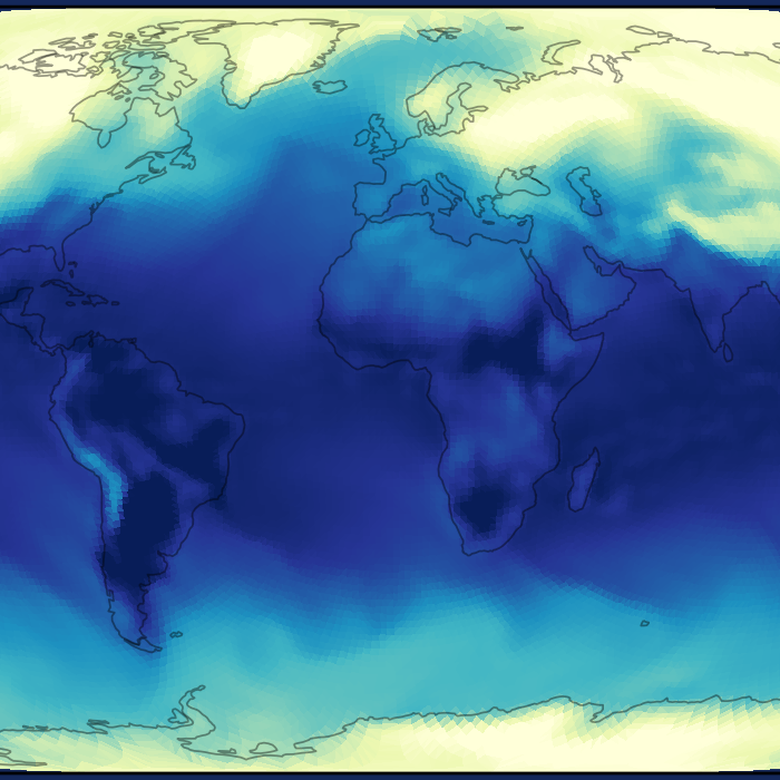
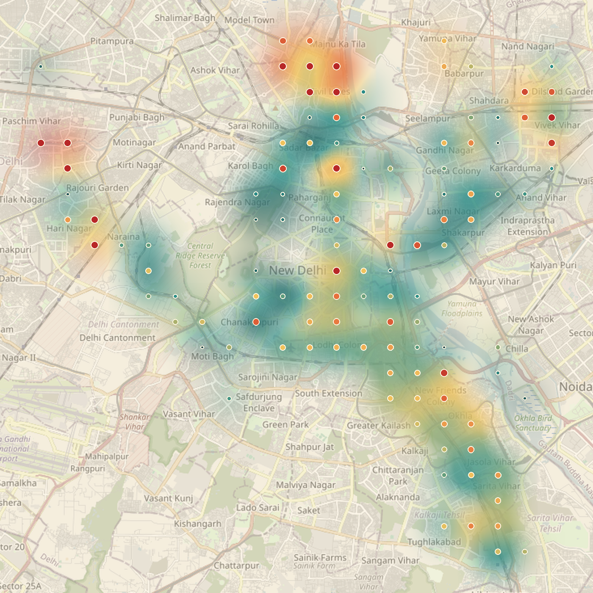
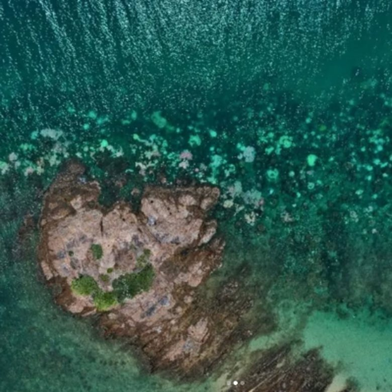

I am a Ph.D. student in Computer Science and Engineering at the University of Michigan, working with Dr. Lauren Gillespie in the GAIEA Lab and Dr. JJ Park in the Park Lab. I'm broadly interested in machine learning for Earth and ecological systems across scales, from individual plants and local extremes to global fields, and especially in the fine-scale structure and rare events that current models tend to smooth away. My work spans geospatial foundation models, field reconstruction from sparse observations, and physics-grounded modeling of extremes, though my previous work has also spanned multimodal learning for scientific data, satellite monitoring of marine ecosystems, and neuroimaging.
Before Michigan, I got my B.S. in Computer Science at UCLA and did research with NASA JPL and Brookhaven National Laboratory. I'm supported by the DOE CSGF, GEM, and Rackham Merit fellowships.
News
- Fall 2026Started my Ph.D. at Michigan. Go Blue!
- Jul 2026Attended the DOE CSGF program review in Washington, DC.
- Jun 2026Graduated from UCLA with a B.S. in Computer Science.
- Jan 2026OmniField was accepted at ICLR 2026.
Research
-

OmniField: Conditioned Neural Fields for Robust Multimodal Spatiotemporal Learning
A neural field that fuses sparse, irregular measurements from several modalities to reconstruct and forecast spatiotemporal fields, and stays robust under heavy sensor noise.
-

Uncertainty-Calibrated Spatiotemporal Field Diffusion with Sparse Supervision
Preprint 2026 · paper
A diffusion model trained directly on sparse observations that reconstructs and forecasts full fields with calibrated uncertainty.
-

Detection of Coral Bleaching using PlanetScope Imagery using the CT Classification Model
Under review, International Journal of Applied Earth Observation and Geoinformation
Reef-scale bleaching detection from PlanetScope SuperDove imagery, evaluated on reefs held out from training. Done at NASA JPL.
Workshop papers
- Kevin Valencia, Z. Liu, J. Cui. Data-Efficient Ensemble Weather Forecasting with Diffusion Models. ICCV 2025 Workshop on Curated Data for Efficient Learning.
- T. Balasooriya, J. Choi, Kevin Valencia, X. Luo, S. Yoo, D. Park. Mamba-GINR: A Scalable Framework for Spatiotemporal Representation of fMRI Data on the Brain. NeurIPS 2025 Workshop on Data on the Brain & Mind.
- Z. Liu, Kevin Valencia, J. Cui. Video Text Preservation with Synthetic Text-Rich Videos. ICCV 2025 Workshop on Curated Data for Efficient Learning.